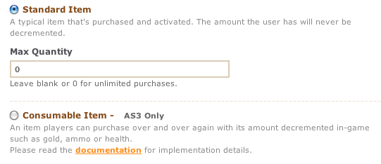
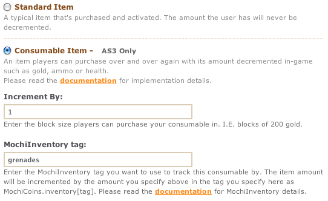
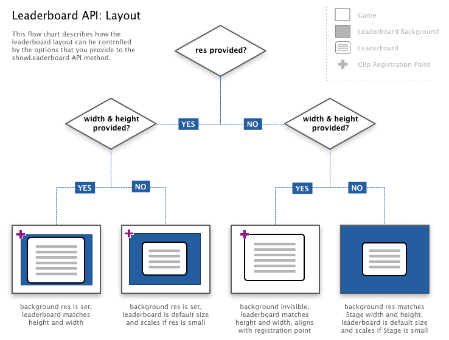

Table of Contents
Analytics API Documentation
1.1 Overview
The Analytics API provides developers with a means of tracking user game information. This includes session durations, how long the average player spends in an average round of play, as well as tracking other events such as item pick-ups, reaching waypoints.
1.2 Prerequisites
MochiAPI is not compatible with versions prior to Flash Player 7, and is no longer compatible with ActionScript 1.0.
Installing the Mochi Analytics Tracking API
- Download and unzip the latest MochiAPI.
- Copy the “mochi” folder and paste it into the root classpath of your game. Most often this is the same as the location of your game’s FLA file.
1.3 Connecting to MochiServices
connect
Description:
Retrieves and initializes the MochiServices.swf from Mochi servers. Any API calls executed prior to the complete download and initialization of the MochiServices.swf are queued and will be executed once the API is available
Parameters:
- id:String
- Mochi game ID
- clip:Object
- the MovieClip or Sprite in which to load the API (optional for all but AS3, defaults to _root). In as3 the clip must be dynamic.
- onError:Function
-
This method will be invoked if MochiServices cannot connect to the server or any IO errors occur in any other API calls.
onError handlers will receive status codes that describe the error. The possible errors are:
- NotConnected — Services were unable to connect or attach to a clip in the current movie.
- IOError — Services has connected but cannot transfer data to and from the server.
AS3 Example:
mochi.as3.MochiServices.connect("xxx", root, onConnectError); // use mochi.as2.MochiServices.connect for AS2 API
public function onConnectError(status:String):void {
// handle error here...
}
… where ‘xxx’ is your Mochi game ID, in quotes. Test your movie, and you should see the following text in your output panel:
MochiServices Connecting…
Waiting for Mochi services to connect…
connected!
If you see the text above, then that means you have the "mochi" folder in the correct location, and have supplied MochiServices the correct Mochi game ID. Keep in mind that you want to connect to MochiServices as early as possible in your game, and before you make any other API calls. You only need to make this call once in the beginning of your game.
AS3 Requirement - The clip parameter
In ActionScript 3, the root of the Stage cannot be accessed globally. If a Sprite or MovieClip does not have access to the root or to another Display Container that has been added to the display list, then it can not be shown visually on the screen. For this reason, you must supply either the root of your stage or a reference to a Sprite or MovieClip that is a child of the stage to the clip parameter when you call MochiServices.connect. Please note the clip passed must also be dynamic.
1.4 Analytics API
The Analytics API really consists of only 3 basic calls. These calls allow our system to determine the duration the average users spends in your game in a single session, the time the player spends during actual gameplay, as well as tracking explicit events you define. Session duration tracking occurs automatically with most games using MochiServices.com and requires no intervention by the developer. Tracking game play and custom events requires new function calls to be added to your game.
Tracking a gameplay round
Tracking gameplay time consists of two calls. These calls are startPlay and endPlay. The combination of the two lets our servers derive the total amount of time a user spends playing your game. It should be noted that there can only be one active round, so you will not be able to track multiple durations at the same time.
AS3 Example:
mochi.as3.MochiEvents.startPlay('easy');
// ... level actions happen
mochi.as3.MochiEvents.endPlay();
Tracking custom events
Aside from tracking gameplay durations, we also offer support for tracking other in game events. These events do not imply a duration, so they can be used for tracking things like in world accomplishments as well as flagging important milestones for the developers. This could be used for tooling the difficulty of specific stages or simply tracking stats.
AS3 Example:
mochi.as3.MochiEvents.trackEvent('level gained',7);
1.5 API Reference
startPlay
Description:
Track the start of gameplay.
Parameters:
- tag:String
- 'tag' associated with gameplay (eg: 'hard')
Example:
MochiEvents.startPlay('hard');endPlay
Description:
Flag gameplay as finished.
Example:
MochiEvents.endPlay();
trackEvent
Description:
Track miscellaneous associative event
Parameters:
- tag:String
- event type 'tag' name
- value:* (optional)
- value associated with event type
Example:
MochiEvents.trackEvent( 'getGrenades', 5 );
MochiSocial API Documentation
1.1 Overview
The Mochi Social API provides developers with a method for establishing a login system through out their games, as well as tracking user progress remotely. This feature was once part of the MochiCoins API, but has since been detached into it's own API.
1.2 Prerequisites
MochiAPI is not compatible with versions prior to Flash Player 7, and is no longer compatible with ActionScript 1.0.
Installing the Mochi Social API
- Download and unzip the latest MochiAPI.
- Copy the “mochi” folder and paste it into the root classpath of your game. Most often this is the same as the location of your game’s FLA file.
1.3 Connecting to MochiServices
connect
Description:
Retrieves and initializes the MochiServices.swf from Mochi servers. Any API calls executed prior to the complete download and initialization of the MochiServices.swf are queued and will be executed once the API is available
Parameters:
- id:String
- Mochi game ID
- clip:Object
- the MovieClip or Sprite in which to load the API (optional for all but AS3, defaults to _root). In as3 the clip must be dynamic.
- onError:Function
-
This method will be invoked if MochiServices cannot connect to the server or any IO errors occur in any other API calls.
onError handlers will receive status codes that describe the error. The possible errors are:
- NotConnected — Services were unable to connect or attach to a clip in the current movie.
- IOError — Services has connected but cannot transfer data to and from the server.
AS3 Example:
mochi.as3.MochiServices.connect("xxx", root, onConnectError); // use mochi.as2.MochiServices.connect for AS2 API
public function onConnectError(status:String):void {
// handle error here...
}
… where ‘xxx’ is your Mochi game ID, in quotes. Test your movie, and you should see the following text in your output panel:
MochiServices Connecting…
Waiting for Mochi services to connect…
connected!
If you see the text above, then that means you have the "mochi" folder in the correct location, and have supplied MochiServices the correct Mochi game ID. Keep in mind that you want to connect to MochiServices as early as possible in your game, and before you make any other API calls. You only need to make this call once in the beginning of your game.
AS3 Requirement - The clip parameter
In ActionScript 3, the root of the Stage cannot be accessed globally. If a Sprite or MovieClip does not have access to the root or to another Display Container that has been added to the display list, then it can not be shown visually on the screen. For this reason, you must supply either the root of your stage or a reference to a Sprite or MovieClip that is a child of the stage to the clip parameter when you call MochiServices.connect. Please note the clip passed must also be dynamic.
1.4 Showing the Universal User Login Widget.
The Login Widget allows the player to register or login and gives them access to their profile, items, coins and user specific data. If the player has previously logged in, the widget will show their profile picture, items, and coins. The Login Widget is 200x25 in size, and will automatically place itself on the top left corner of your stage. We recommend this placement for consistency between all games, however you may pass in a custom position for your specific design. This widget can also open a storefront if you are currently using MochiCoins integration. This button will simply call MochiCoins.showStore( { tags: ['widget'] } ), so you must add the 'widget' tag to any items you wish to appear in this storefront. This is an opt-in service and you must listen for the ITEM_NEW event any time you are actively showing the login widget.
import mochi.as3.*;
MochiSocial.showLoginWidget(); // You can also pass a x,y - MochiSocial.showLoginWidget({x:330, y:360})
You can hide the Login Widget with the code below. The widget will still be loaded to keep state but won't be visible.
MochiSocial.hideLoginWidget();
1.5 Listening to Events.
Once a player has logged in, you will get a LOGGED_IN event. If the player previously logged in and has a valid session, this may happen quickly after the MochiServices.connect() call, so listeners should be enabled for these events before your MochiServices.connect() call
import mochi.as3.*; // import mochi.as2.* if using the AS2 API
MochiSocial.addEventListener(MochiSocial.ERROR, handleError);
MochiSocial.addEventListener(MochiSocial.LOGGED_IN, loggedIn);
MochiServices.connect("xxx", root, onError);
public function loggedIn(event:Object):void {
// receive {name: name, uid: uid, profileImgURL: profileImgURL, hasCoins: True, userProperties: { hitPoints: 120 }}
trace("Hello " + event.name);
}
It should be noted that the parameter dispatched with an event is an Object, and not a decedent of the Event class. While Objects behave in a similar fashion as an Event object, they do not contain the same parameters and properties as a built-in AS3 Event. Likewise, you will not be able to use instanceof, is, as and typeof to determine what kind of event has been passed.
1.6 Saving persistent player properties.
The MochiSocial API will allow you to save persistent player properties. This can be used to save any custom player state that can be retrieved on subsequent gameplays. As an example, you may wish to save the state of health, experience, or the number of levels unlocked for the player which can provide a more continuous game play experience when the user returns to the game at a later time. The example below will save the key value pairs specified for the logged in player. Only values of types Number, String, Boolean, and Array can be saved. There is currently a 4KB limit (total serialized size) per user per game that can be saved.
MochiSocial.saveUserProperties({ hitPoints: 120, levelsFinished: [1, 2, 4, 6] });
The above call will overwrite the previous properties Object that may have existed for the player. On subsequent MochiSocial.LOGGED_IN events, this object will be passed back.
MochiSocial.addEventListener(MochiSocial.LOGGED_IN, loggedIn);
public function loggedIn(ev:Object):void {
// receive {name: name, uid: uid, profileImgURL: profileImgURL, hasCoins: True, userProperties: { hitPoints: 120 .. }}
var userProperties:Object = ev.userProperties
}
MochiSocial.PROPERTIES_SAVED event will occur when the properties Object save is successful. MochiSocial.ERROR of type MochiSocial.PROPERTIES_SIZE or of type MochiSocial.NO_USER will occur when the size of the properties Object is too large, or no user is logged in. See 1.10 Event definitions.
MochiSocial.addEventListener(MochiSocial.PROPERTIES_SAVED, properties_saved);
MochiSocial.addEventListener(MochiSocial.ERROR, handleError);
public function properties_saved(ev:Object):void {
trace("Properties Saved!");
}
public function handleError(ev:Object):void {
switch (ev.type) {
case MochiSocial.PROPERTIES_SIZE:
trace("Properties too large.");
break;
case MochiSocial.NO_USER:
trace("No user logged in.");
break;
}
}
1.7 API
showLoginWidget
Description:
Shows the login widget.
Parameters:
- x:Number
- x coordinate
- y:Number
- y coordinate
Example:
MochiCoins.showLoginWidget({ x:150, y: 150 });hideLoginWidget
Description:
Hides the login widget.
requestLogin
Description:
Present the user with a modal login screen.
saveUserProperties
Description:
This method allows you to save custom user state that can be retrieved on subsequent gameplays. This is done by passing an Object with key value pairs to this method. On subsequent MochiSocial.LOGGED_IN events, this object will be passed back (See MochiSocial.LOGGED_IN in 1.10 Event definitions).
Parameters:
- properties:Object
- An Object of user defined key value pairs. Only values of types Number, String, Boolean, Array, and Object will be saved. There is currently a 4KB limit (total serialized size) per user per game that can be saved.
Events:
- MochiSocial.PROPERTIES_SAVED
- User properties successfully saved. See 1.10 Event definitions
Example:
MochiSocial.saveUserProperties({ hitPoints: 120 });1.8 Retrieving user information
MochiSocial will now allow developers to retrieve information relating to MochiGames users. This includes data such as the currently logged in user's friends, public profile information and gameplay stats for users. These can use used to help integrate your game into a rich social experience.
This new API consists of a few basic calls. These calls are all performed asynchronously.
getFriendsList
Description:
Retrieve a list of currently logged in user's friends.
NOTE: For security reasons, developers only have access to the user's MochiGames friendsExample:
MochiSocial.addEventListener( MochiSocial.LOGGED_IN, loginEvent );
MochiSocial.addEventListener( MochiSocial.FRIEND_LIST, dumpMyFriends );
private function loginEvent(event:Object):void {
MochiSocial.getFriendsList();
}
private function dumpMyFriends(event:Object):void {
for( var k:String in event.friends )
trace("User has friend: ", event.friends[k].name );
}
For more detailed description of the event callback, see: 1.10 Event definitions.
getProfileData
Description:
Retrieve public profile information about a MochiGames user
Parameters:
- uid:Object
- User ID to retrieve information about
Example:
MochiSocial.addEventListener( MochiSocial.LOGGED_IN, loginEvent );
MochiSocial.addEventListener( MochiSocial.FRIEND_LIST, dumpMyFriends );
MochiSocial.addEventListener( MochiSocial.PROFILE_DATA, profileData );
private function loginEvent(event:Object):void {
MochiSocial.getFriendsList();
}
private function dumpMyFriends(event:Object):void {
for( var k:String in event.friends )
MochiSocial.getProfileData( { uid: k } );
}
private function profileData(event:Object):void {
// TODO: DOCUMENT PROFILE DATA EVENT
}
For more detailed description of the event callback, see: 1.10 Event definitions.
getGameplayData
Description:
Retrieve gameplay specific information about a player
Parameters:
- uid:Object
- User ID to retrieve information about
Example:
MochiSocial.addEventListener( MochiSocial.LOGGED_IN, loginEvent );
MochiSocial.addEventListener( MochiSocial.FRIEND_LIST, dumpMyFriends );
MochiSocial.addEventListener( MochiSocial.GAMEPLAY_DATA, gameplayData );
private function loginEvent(event:Object):void {
MochiSocial.getFriendsList();
}
private function dumpMyFriends(event:Object):void {
for( var k:String in event.friends )
MochiSocial.getGameplayData( { uid: k } );
}
private function gameplayData(event:Object):void {
// TODO: DOCUMENT GAMEPLAY DATA EVENT
}
For more detailed description of the event callback, see: 1.10 Event definitions.
1.9 Socializing with the user
As well as being able to view information about a user's friends, developers are now provided with an API for allowing users to socialize with one another. This includes complex messaging, feeds and invitations with optional rewards for completing actions.that
NOTE: It is against policy to punish a user for not completing an action, such as requiring a user to invite friends to continue playing. It is, however, okay to reward a user for completing an action
Currently, our APIs allow developers to offer the user to send invites, post to the player's stream and finally follow the developer.
sendFeedback
Description:
Send feedback to the developer about their game
Parameters:
- uid:Object
- User ID to retrieve information about
postToStream
Description:
Allows players to post message about the current game to their stream
Parameters:
- channel:Array (optional)
- Stream to post message to (defaults to player's stream)
- item:String (optional)
- Optional coins item to award user for posting item to their stream
- title:String (optional)
- Title of the action window
- thumbURL:String (optional)
- Image displayed next to title
- message:String (optional)
- Default message posted to stream
- sandbox:Boolean (optional)
- When true, prevents actual request from being sent but pretends that communications were successful
Example:
function doStreamPost( e:Event = null ):void
{
MochiSocial.addEventListener( MochiSocial.ACTION_COMPLETE, onStreamPost );
MochiSocial.addEventListener( MochiSocial.ACTION_CANCELED, onCancel );
MochiSocial.postToStream( {} );
}
function onStreamPost( e:Object ):void
{
// Thanks for posting to your stream!
onCancel(e);
}
function onCancel( e:Object ):void
{
MochiSocial.removeEventListener( MochiSocial.ACTION_COMPLETE, onStreamPost );
MochiSocial.removeEventListener( MochiSocial.ACTION_CANCELED, onCancel );
}
For more detailed description of the event callback, see: 1.10 Event definitions.
inviteFriends
Description:
Allows user to invite other to play the current game.
Parameters:
- friends:Array (optional)
- List of friend user ids to preselect
- item:String (optional)
- Optional coins item to award users giving and receiving invitation
- title:String (optional)
- Title of the invitation window
- thumbURL:String (optional)
- Image displayed next to title
- message:String (optional)
- Default message attached to invitation
- sandbox:Boolean (optional)
- When true, prevents actual request from being sent but pretends that communications were successful
Example:
function doInvitation( e:Event = null ):void
{
MochiSocial.addEventListener( MochiSocial.ACTION_COMPLETE, onInvite );
MochiSocial.addEventListener( MochiSocial.ACTION_CANCELED, onCancel );
MochiSocial.inviteFriends( {} );
}
function onInvite( e:Object ):void
{
// Thanks for inviting your friends!
onCancel(e);
}
function onCancel( e:Object ):void
{
MochiSocial.removeEventListener( MochiSocial.ACTION_COMPLETE, onInvite );
MochiSocial.removeEventListener( MochiSocial.ACTION_CANCELED, onCancel );
}
For more detailed description of the event callback, see: 1.10 Event definitions.
requestFan
Description:
Offer player the ability to follow a developer's stream.
Parameters:
- channel:Object (optional)
- Channel to follow (defaults to game developer's channel)
- sandbox:Boolean (optional)
- When true, prevents actual request from being sent but pretends that communications were successful
Example:
function doFollowRequest( e:Event = null ):void
{
MochiSocial.addEventListener( MochiSocial.ACTION_COMPLETE, onFollow );
MochiSocial.addEventListener( MochiSocial.ACTION_CANCELED, onCancel );
MochiSocial.inviteFriends( {} );
}
function onFollow( e:Object ):void
{
// Thanks for following the stream!
onCancel(e);
}
function onCancel( e:Object ):void
{
MochiSocial.removeEventListener( MochiSocial.ACTION_COMPLETE, onFollow );
MochiSocial.removeEventListener( MochiSocial.ACTION_CANCELED, onCancel );
}
For more detailed description of the event callback, see: 1.10 Event definitions.
1.10 Event definitions
Events as well as any arguments your event handler will receive are listed below
- MochiSocial.LOGGED_IN {name: "name", uid: unique_identifier, profileImgURL: url_of_player_image, hasCoins: True, userProperties: {hitPoints: 120}, api_token: "***"}
- Player logged in. This events passes an object with the above keys to your event listener. The userProperties key is a per user per game property bag that you save with the saveUserProperties call. This event will also be sent after calling MochiServices.connect() if the player is already logged in.
- MochiSocial.FRIEND_LIST {friends:[ { uid: 9, name:"User Name", thumbURL: "http://..." } }
- Player friend graph. This event is the response to the MochiSocial.getFriendsList()
- MochiSocial.PROFILE_DATA {}
- User profile information. This event is the response to the MochiSocial.getProfileData() call.
- MochiSocial.GAMEPLAY_DATA {}
- User gameplay information. This event is the response to the MochiSocial.getGameplayData() call.
- MochiSocial.ACTION_CANCELED { call: 'inviteFriends' or 'postToStream' or 'requestFan' or 'sendFeedback' }
- User canceled a social action. This event is fired when the user chooses not to complete a MochiSocial action form.
- MochiSocial.ACTION_COMPLETE { call: 'inviteFriends' or 'postToStream' or 'requestFan' or 'sendFeedback' }
- User completed a social action. This event is fired when the user completes a MochiSocial action form.
- MochiSocial.LOGGED_OUT
- Player logged out. This event will also be sent after calling MochiServices.connect() if the player is not logged in.
- MochiSocial.LOGIN_SHOW
- Login widget showing.
- MochiSocial.LOGIN_HIDE
- Login widget hidden.
- MochiSocial.PROFILE_SHOW
- Profile/inventory screen showing. Player viewing profile/inventory.
- MochiSocial.PROFILE_HIDE
- Profile/inventory screen hidden.
- MochiSocial.PROPERTIES_SAVED
- User properties successfully saved. This happens after a call to MochiCoins.saveUserProperties().
- MochiSocial.WIDGET_LOADED
- Login / Store SWF loaded. Use this event to know when the Login widget has been loaded. For example you may wish to display a splash screen until then to prevent a visual delay in the Login widget appearing. Calling MochiServices.connect() in the Preloader area of your game can also help load the widget prior to when it's needed.
- MochiSocial.ERROR { type: MochiSocial.IO_ERROR }
- An error occurred. Values for type are listed below:
- MochiSocial.IO_ERROR: There was a network error.
- MochiSocial.PROPERTIES_SIZE: MochiCoins.saveUserProperties() call failed. The property size is too large. There is currently a 4KB limit (total serialized size).
- MochiSocial.NO_USER: MochiCoins.saveUserProperties() call failed. No user is logged in.
1.11 Universal Data Storage (AS3-only persistence)
Mochi Social API games written in AS3 have a persistence API that goes far beyond the limitations of userProperties.
With this API you can store multiple keys per user without any 4kb limit. The data is persisted in AMF3 format with compression, so you can efficiently store and transmit anything that could be persisted by SharedObject.
This API is only available when a user is logged in. It will fail if you call it before the MochiSocial.LOGGED_IN event is received or if you call it after a MochiSocial.LOGGED_OUT event occurs.
get
Description:
Get the data stored at key for this user, will call callback(userData) with the result. If there is no value stored at key, userData.data will be null.
Parameters:
- key:String
- The name of the key to retrieve for this user
- callback(userData:MochiUserData):void:Function
- The function to be called on success or error. On success, userData.error is null and userData.data is set to the value of this key for the logged-in user. If the key has not been previously set, userData.data will be null. If an error has occurred, userData.error will be a description of the error.
Example:
private function loginEvent(event:Object):void {
MochiUserData.get("login_count", gotLoginCount);
}
private function gotLoginCount(userData:MochiUserData):void {
if (userData.error) {
trace("[ERROR] could not fetch login_count: " + userData.error);
return;
}
var login_count:Number = 0;
if (userData.data !== null) {
login_count = login_count.data;
}
trace("This user has logged in " + login_count + " times");
MochiUserData.put("login_count", login_count + 1, putLoginCount);
}
private function putLoginCount(userData:MochiUserData):void {
if (userData.error) {
trace("[ERROR] could not put login_count: " + userData.error);
return;
}
trace("Successfully updated login_count for user");
}
put
Description:
Store value at key for this user, will call callback(userData) to report success or error. If the put succeeded, userData.error will be null.
Parameters:
- key:String
- The name of the key to retrieve for this user
- value:*
- The value to store at key for this user. Can be anything serializable by AMF3 (in other words, anything that you could put in a SharedObject).
- callback(userData:MochiUserData):void:Function
- The function to be called on success or error. On success, userData.error is null. If an error has occurred, userData.error will be a description of the error.
Example:
private function loginEvent(event:Object):void {
MochiUserData.get("login_count", gotLoginCount);
}
private function gotLoginCount(userData:MochiUserData):void {
if (userData.error) {
trace("[ERROR] could not fetch login_count: " + userData.error);
return;
}
var login_count:Number = 0;
if (userData.data !== null) {
login_count = login_count.data;
}
trace("This user has logged in " + login_count + " times");
MochiUserData.put("login_count", login_count + 1, putLoginCount);
}
private function putLoginCount(userData:MochiUserData):void {
if (userData.error) {
trace("[ERROR] could not put login_count: " + userData.error);
return;
}
trace("Successfully updated login_count for user");
}
Coins API Documentation
1.1 Overview
The Mochi Coins API provides an easy way to sell game upgrades like level unlocks, equipment, special weapons and cheats to players. It also provides secure login and server side persistence of player data to store game state and user data no matter where the game is played.
1.2 Prerequisites
MochiAPI is not compatible with versions prior to Flash Player 7, and is no longer compatible with ActionScript 1.0.
Installing the Coins API
- Download and unzip the latest MochiAPI.
- Copy the “mochi” folder and paste it into the root classpath of your game. Most often this is the same as the location of your game’s FLA file.
- Create your store and add items in your Mochi Developer account.
1.3 Connecting to MochiServices
connect
Description:
Retrieves and initializes the MochiServices.swf from Mochi servers. Any API calls executed prior to the complete download and initialization of the MochiServices.swf are queued and will be executed once the API is available
Parameters:
- id:String
- Mochi game ID
- clip:Object
- the MovieClip or Sprite in which to load the API (optional for all but AS3, defaults to _root). In as3 the clip must be dynamic.
- onError:Function
-
This method will be invoked if MochiServices cannot connect to the server or any IO errors occur in any other API calls.
onError handlers will receive status codes that describe the error. The possible errors are:
- NotConnected — Services were unable to connect or attach to a clip in the current movie.
- IOError — Services has connected but cannot transfer data to and from the server.
AS3 Example:
mochi.as3.MochiServices.connect("xxx", root, onConnectError); // use mochi.as2.MochiServices.connect for AS2 API
public function onConnectError(status:String):void {
// handle error here...
}
… where ‘xxx’ is your Mochi game ID, in quotes. Test your movie, and you should see the following text in your output panel:
MochiServices Connecting…
Waiting for Mochi services to connect…
connected!
If you see the text above, then that means you have the "mochi" folder in the correct location, and have supplied MochiServices the correct Mochi game ID. Keep in mind that you want to connect to MochiServices as early as possible in your game, and before you make any other API calls. You only need to make this call once in the beginning of your game.
AS3 Requirement - The clip parameter
In ActionScript 3, the root of the Stage cannot be accessed globally. If a Sprite or MovieClip does not have access to the root or to another Display Container that has been added to the display list, then it can not be shown visually on the screen. For this reason, you must supply either the root of your stage or a reference to a Sprite or MovieClip that is a child of the stage to the clip parameter when you call MochiServices.connect. Please note the clip passed must also be dynamic.
1.4 Listening to Events.
Once a player has logged in, you will get a LOGGED_IN event followed by ITEM_OWNED events for each item the player owns. If the player previously logged in and has a valid session, this may happen quickly after the MochiServices.connect() call, so listeners should be enabled for these events before your MochiServices.connect() call. When players purchase an item, the ITEM_NEW event will happen, allowing you to register the item for your game.
import mochi.as3.*; // import mochi.as2.* if using the AS2 API
MochiSocial.addEventListener(MochiSocial.ERROR, handleError);
MochiSocial.addEventListener(MochiSocial.LOGGED_IN, loggedIn);
MochiCoins.addEventListener(MochiCoins.ITEM_OWNED, registerItem);
MochiCoins.addEventListener(MochiCoins.ITEM_NEW, newItem);
MochiServices.connect("xxx", root, onError);
public function loggedIn(event:Object):void {
// receive {name: name, uid: uid, profileImgURL: profileImgURL, hasCoins: True, userProperties: { hitPoints: 120 }}
trace("Hello " + event.name);
}
public function registerItem(event:Object):void {
// receive {id: id, count: count}
trace("Player owns " + event.count + " of " + event.id);
}
public function newItem(event:Object):void {
// receive {id: id, count: count}
trace("Player just bought " + event.count + " of " + event.id);
}
It should be noted that the parameter dispatched with an event is an Object, and not a decedent of the Event class. While Objects behave in a similar fashion as an Event object, they do not contain the same parameters and properties as a built-in AS3 Event. Likewise, you will not be able to use instanceof, is, as and typeof to determine what kind of event has been passed.
1.5 Showing the store.
Use MochiCoins.showStore() to show your store with two or more items. You may pass an optional tags array to show a subset of the items in your store that match the tags defined in your items in your Mochi Developer account. The tags array can also have specific itemIds specified as each item is already implicitly tagged with its itemId. The example below shows all items with the "weapons" tag as well as a specific itemId. No x,y coordinates are passed as the store should fill the stage.
MochiCoins.showStore({ tags: ["weapons", "c27d0672bf98ec05"] });
1.6 Showing a single item.
Use MochiCoins.showItem() to show a modal dialog offering a single item. Pass the item identifier listed for your item in your Mochi Developer account. The dialog will center itself on the stage but you may also pass x,y coordinates.
MochiCoins.showItem({item: "xxx"}); // You can also pass a x,y - MochiCoins.showItem({x:330, y:360, item: "xxx"})
1.7 Showing an item demonstration video.
Use MochiCoins.showVideo() to show a modal dialog displaying the demonstration video associated with an item. The call will be ignored if the item ID is invalid, or there is no video associated with the specified item.
MochiCoins.showVideo({item: "xxx"});
1.8 API
showStore
Description:
Shows the game store.
Parameters:
- tags:Array (optional)
- Array of string group names for filtering
Example:
MochiCoins.showStore({ tags: ["weapons"] });
showItem
Description:
Shows a single item for purchase. The UI will center itself on the stage be default if no custom coordinates are passed.
Parameters:
- x:Number
- x coordinate
- y:Number
- y coordinate
- item:String
- item id
- bought:Boolean (optional)
- set to true if you wish to show the single item dialog and force the ui to show the item as being bought by the user. This can be useful if you sell an item that represents a bundle of other items in your game and wish to prevent players who have already bought that bundle from purchasing this single item.
Example:
MochiCoins.showItem({ x:150, y: 150, item: "xxx" });
showVideo
Description:
Shows the demonstration video associated with the specified item ID.
Parameters:
- item:String
- item id
Example:
MochiCoins.showVideo({ item: "xxx" });
getStoreItems
Description:
Get items metadata from the store. This will fire the MochiCoins.STORE_ITEMS event.
Events:
- MochiCoins.STORE_ITEMS
- Event with metadata. See 1.9 Event definitions
1.9 Event definitions
Events as well as any arguments your event handler will receive are listed below
- MochiCoins.STORE_SHOW
- Store (single or multiple items) showing.
- MochiCoins.STORE_HIDE
- Store hidden.
- MochiCoins.ITEM_OWNED {id: item id, count: number owned, tags: [ "powerup", "enhancement" ], properties: { power: 20 }}
- Player owns item. The values of the tags and properties keys are what you have set your Item Store under your developer account.
- MochiCoins.ITEM_NEW {id: item id, count: number bought, tags: [ "powerup", "enhancement" ], properties: { power: 20 }}
- Player bought item. The values of the tags and properties keys are what you have set your Item Store under your developer account.
- MochiCoins.STORE_ITEMS [ { id: "ab473e7f87129ecb", name: "Super Cannon", desc: "A Super Cannon", imgURL: "http://..", cost: 150, maxNum: 1, tags: [ level-1, powerup] ], properties: { power: 20 } } ]
- Calling MochiCoins.getStoreItems() will trigger this event, passes an array of item meta objects.
- MochiCoins.ERROR { type: MochiCoins.IO_ERROR }
- An error occurred. Values for type are listed below:
- MochiCoins.IO_ERROR: There was a network error.
1.10 Consumables and In-Game Currency Support (AS3-only purchase and consumable tracking)
MochiInventory is a layer on top of the Universal Data Storage, created for tracking purchases, consumables and game-specific currency.
The API was created to be automatic and transparent with as little code possible. This is done with a synchronized list of numbers located inside of the MochiCoins.inventory namespace. To store, remove or update any value inside of this object, simply treat it as you would any other AS3 Object.
Example:
// Create, or set the value of a property
MochiCoins.inventory.grenades = 5;
// Increment the number of grenades by 3
MochiCoins.inventory.grenades += 3;
// Finally, delete the grenades key from the object
delete MochiCoins.inventory.grenades;
// You can also access keys by string
MochiCoins.inventory["grenades"] = 5;
Modifying these values will start an automatic synchronization process with the server, automatically committing any changes you've made to the data after a short pooling period.
These property list is not immediately available for modification. MochiInventory must first download the initial state of the object from our servers. To accommodate the developer we have created a list of three events which should be used with your application.
- MochiInventory.READY
- Dispatched when MochiInventory has received it's initial synchronization and is ready for modifications.
- MochiInventory.WRITTEN
- Occurs when MochiInventory has been successfully written to the server. This does not occur with every modification, as writes are deferred to reduce load on the server. This is provided to notify you that a synchronization has recently taken place.
- MochiInventory.ERROR { type: xxx, error: xxx }
- Occurs when an error has occurred with the MochiInventory API. Type can be one of three different values:
- MochiInventory.IO_ERROR
- There was a network failure that prevented synchronization with the server
- MochiInventory.NOT_READY
- Attempted to modify the inventory object before initial data synchronization has occurred
- MochiInventory.VALUE_ERROR
- Attempted to store anything other than a number in the object
All three of these basic events can be used to handle the basic status of the MochiInventory system.
Example:
function inventoryReady( event:Object ):void
{
// Inventory is ready to be modified
MochiCoins.inventory.grenades = 5;
}
function syncOccurred( event:Object ):void
{
trace("inventory written to server");
}
function handleError( error:Object ):void
{
switch( error.type )
{
case MochiInventory.IO_ERROR:
trace("Network error:", error.error);
break ;
case MochiInventory.VALUE_ERROR:
trace("Attempted to write non-Number value:", error.error);
break ;
case MochiInventory.NOT_READY:
trace("Inventory not ready for modification:", error.error);
break ;
}
}
MochiInventory.addEventListener(MochiInventory.READY, inventoryReady);
MochiInventory.addEventListener(MochiInventory.WRITTEN, syncOccurred);
MochiInventory.addEventListener(MochiInventory.ERROR, handleError);
Finally, there is the purchase tracking that is built into MochiInventory. MochiInventory automatically tracks purchases and will also work with the runtime property settings of various MochiCoins purchases to help you create things such as game-specific currency and consumable items. When a purchase event is received by the MochiInventory API, the following things happen:
A key with the itemID of the purchase will automatically be created and/or incremented. For example, if a user purchases 5 of the item "0000000000000000", MochiCoins.inventory['0000000000000000'] will increment by 5. You can increment or decrement this value at will, and the number will only be internally modified when the user makes additional purchases.
If the item is marked as consumable it will also increment the consumable key by a fixed amount per purchase. This feature can be used to sell bundles of items such as $1000 of game-specific currency or packs of 5 grenades.
To set the consumable values for an item, first, you must set the item as 'consumable' in the 'item type' section of the item settings for a store.
Finally, you need to set the key, and the amount you want to increment this key by. For example, if you wish to increment MochiInventory.inventory.grenades by 5 for each purchase of the item, you would set your settings like this example.

You now have a pack of 5 consumable grenades available for purchase once you sync your store.
Please note that this value is only tracked by the client side API, and the values themselves will
not be reflected anywhere inside of the UI, and it is up to the developer to display the values of
the various properties.
NOTE: If MochiInventory misses a purchase (due to communications failure, or other errors), MochiInventory will synchronize the missing purchases on the next game session.
2.0 Sandbox Mode.
Sandbox Mode allows you to test the viewing and purchasing of items in your store without publishing the changes to all players. All changes to your store and items are only visible in Sandbox Mode to Sandbox users until the changes are published.
To test your store, items and purchasing in Sandbox Mode:
- Create or modify your store in your game's Coins tab. Your changes will only be available to Sandbox users until they are published via the Publish Changes button.
- In the Sandbox Settings menu on the right enter a list of Mochi Developer accounts to allow sandbox access.
- Login to the Coins Login Widget as a Sandbox user by using your Mochi Developer username prepended with an '@'. Your password is the same as your Mochi Developer password.
- In Sandbox Mode you have a large amount (1,000,000) of coins for testing.
- Clear all purchased items for Sandbox users with the Clear Sandbox Inventory button in the Sandbox Settings menu.
3.0 Server Validation
The Mochi Coins API has a very simple to use server to server API that lets you verify the identity and inventory of a user for your game. This means that you don't have to trust the client, which prevents cheating.
In the client's MochiSocial.LOGGED_IN event there is an "api_token" property. The API token will allow you to make read-only server calls on behalf of that player. You will get a JSON response that summarizes who the user is and what they own in your game.
Example HTTP response from http://api.mochigames.com/coins/user-info/$$API_TOKEN
{
"hasCoins": true,
"inventory": [
{
"count": 1,
"id": "2ecad5ea55fc7aba",
"properties": {
"slug": "barkley"
},
"tags": [
"dog",
"small"
]
}
],
"name": "name",
"uid": 1,
"userProperties": {
"hitPoints": 120
}
}
Example PHP code:
$$handle = fopen("http://api.mochigames.com/coins/user-info/" . $$api_token, "rb");
$$contents = stream_get_contents($$handle);
fclose($$handle);
$$res = json_decode($$contents);
echo "User " . $$res->{'name'} . "\n";
foreach($$res->{'inventory'} as $$item) {
echo " owns " . $$item->{'count'} . " of item " . $$item->{'id'} . "\n";
}
Ads API Documentation
This is a simple step-by-step guide to getting Mochi Ads API working with your Flash game. Click the links below to skip to any part of this document. The first two sections describe all that is required to get your ads running.
1.1 Prerequisites:
MochiAPI is not compatible with versions prior to Flash Player 7, and is no longer compatible with ActionScript 1.0.
Before you get started, make sure you have done the following:
- Sign up for a Mochi Developer account on www.mochimedia.com
- Log in and add a new game to your account.
- Download the MochiAPI include ZIP package.
- Choose your code options and copy the Mochi Ads API in-game code.
1.2 The Mochi API Ad Codes:
Figure a: The MochiAPI ZIP package folder structure.
You need two things for Mochi Ads API to work properly in your game -- The mochi include folder, and the in-game code.
The include folder contains the ActionScript code that your game will reference to display your ad. You will never need to edit this code. You just need to make sure that it is in the proper location so that it is imported or included when you publish or compile your game. You only need to do this once for each game, no matter how many ads you show in the game.
The in-game code is the code you paste into your game to display the ad at a specific point in the game. This may be placed in a specific frame on the main timeline of your movie, or called when a specific event is called in your game code. Depending on how you created your game, where you place this code will differ. Just remember, when you make the call to the Mochi Ads API, that's when the ad will show.
Include Folder Installation:
Figure b: Copying the mochi folder to the directory of your .fla.
(Click image to restart animation)
The MochiAPI ZIP package contains the include code necessary for your game. UnZIP the package to a location on your hard drive. If you browse to that location, you will see a group of folders (fig.a).
Make sure to read the README.TXT file for information regarding the latest release of the MochiAPI file include.
Each folder in the package corresponds to a particular coding environment. It's up to you to choose which one is best for you:
- docs: MochiAPI usage documentation.
- examples: Examples using MochiAPI.
- mochi: MochiAPI include folder.
Simply copy the mochi folder and paste it into the
location where you are publishing your game. You do not need to create a
special folder for the include (fig.b).
These instructions also apply to the examples. Simply copy the
mochi folder into the example project direct that you wish to use,
and publish to test.
Adding the In-game Code:
The in-game code is a one-line code snippet that you copy from the
Mochi Developer web site. This code is a method call that tells MochiAPI to launch your ad. You will paste
this code into your game in the place where you want the ad to appear.
Your code looks something like this:
mochi.as2.MochiAd.showPreGameAd({id:"xxxxxxxxxxxxxxxx", res:"360x240"});
NOTE: In the 3.0 revision of the API, we changed namespaces for
our libraries to unify and organize our packages. Now you must explicitly call the
API corresponding to your ActionScript version: mochi.as2.* or
mochi.as3.* respectively. For the purposes of this
documentation we will show examples specifying the ActionScript 2.0 MochiAPI. Simply remove
mochi.as2. from the code samples, and add import mochi.as3.*;
to the beginning of your code block to use the ActionScript 3.0 MochiAPI.
There are three types of ads you can place in your game -- a pre-game ad, an inter-level ad and a Click-away ad. Pre-game ads include a preloader bar that grows as your game file is loaded from the web to the player's computer. An inter-level ad is an ad that appears at some point during game-play. The most convenient and unobtrusive time to show ads is usually between game levels, hence the name inter-level ad. Click-away ads are 300x250 ads that can be placed anywhere you specify and will only disappear on a user-initiated action.
You can use the Mochi Developer web site to customize your code for the particular type of ad and version of ActionScript you need.
ACTIONSCRIPT 3 NOTE: ActionScript 3 developers will also notice that there is an additional parameter named clip which passes a reference to the DisplayObject container for your ad to appear. This is required, and by default this is set to root for pre-game and inter-level ads. See below for more info regarding customizing this parameter.
Pre-game Ad:
Figure c: Pasting the pre-game code into a game FLA.
(Click image to restart animation)
To add a pre-game ad with a preloader to your game, simply get the appropriate in-game code from the Mochi Developer web site, and paste it into the main timeline of your movie, in the place you've designated for a preloader (fig.c).
If your game is ready, you can test your movie, and you should see the pre-game ad appear as your movie loads. You may test your ads as much as you like while you develop your game. Keep in mind that your ads will not earn money until you complete your game profile which includes a URL to the completed game. You may also upload your SWF file from the Game Settings page for free hosting.
Inter-level Ad
Figure d: Pasting the inter-level code into a game FLA.
(Click image to restart animation)
To add an inter-level ad to your game, simply get the appropriate code from the Mochi Developer web site, and paste it into the main timeline of your movie, in the place you've designated for your inter-level screen (fig.d).
Just like the pre-game ad, you can test your game and see the inter-level ads in action.
Click-away ad
To add a Click-away ad to your game, simply get the appropriate code
from the Mochi Developer web site. Pass in the DisplayObject container / MovieClip which
will contain the Click-away ad in the clip parameter. The upper left corner
of the 300x250 Click-away ad will be placed at the upper left corner of the DisplayObject
container / MovieClip you specify. When you wish to stop displaying the Click-away ad
pass your clip to MochiAd.unload() depending on your respective ActionScript version
publish settings.
Flash Player Security Settings:
If you are testing locally outside of the Flash authoring environment and want to be able to see ads, you will need to change the default local playback security settings. In Flash, go to "File -> Publish Settings," then click on the "Flash" tab. At the bottom, under "Local Playback Security", choose "Access network only" and then publish again. Keep in mind that if you are loading any local data that it will no longer be accessible until you change your settings back to "Access local files only." These settings will not affect playback on the web.
Alternatively, you may wish to add the location of your development files to your global security settings in the Adobe Flash Player Settings Manager. This way, you can give all SWF files in this location local-trusted access, allowing access to both local and remote data.
You will not need to do this if you are only testing your games in the Flash authoring environment, although you will see Sandbox Violation warnings in the Output panel. Warnings pertaining to MochiAPI can be safely ignored.
Alternate In-game Code Placement
Since there are many different ways to architect Flash games, it is very likely that your game development setup is not the same as what you see above. You may have nested MovieClips, or perhaps you are not using the timeline at all. It is possible to place your in-game code in the timeline of a MovieClip as well, and it will execute when the frame where you placed the code is reached.
And You're Done!
That's all that is required to get MochiAPI Ads running in your game. When you've completed your game and released it to the world, be sure to complete your profile so that your game can be approved and you can start earning money right away!
1.3 Customizing Your Ad
It is possible to customize many of the visual elements and behaviors of your Mochi Ads. The Mochi Ads API in-game code allows you to simply tailor the display to suit your needs. Here's some of the things you can tweak:
- MovieClip container: You can place your ad into any MovieClip on the stage, or into MovieClips you create with Actionscript.
- Timing: You can customize fade time of your ads.
- Colors: Change the colors of the ad preloader bar, background and outline. You can also turn off the solid background.
- Event Handlers: You can assign custom functions to be called when ads start, load, and end.
The Mochi Ads API
Your ads can be customized by sending special parameters via your in-game code. Depending on whether you've chosen to display a pre-game or inter-level ad, your options will be slightly different.
The in-game code is passed an object with keys and values to pass to the server. The default code contains two keys -- id, the unique Mochi game ID, and res, the height x width of your game. These parameters are required.
mochi.as2.MochiAd.showPreGameAd({id:"xxxxxxxxxxxxxxxx", res:"360x240"});
You may add more key: value pairs to the object by separating them with commas. You may add the following optional parameters to your object:
- clip:MovieClip - a MovieClip reference in which to place the ad. Required for click-away ads or if you're using Actionscript 3.0. Otherwise the default is _root. (default: _root)
- no_bg:Boolean - setting to true allows you to disable the background entirely. (default: false)
The following additional options apply to pre-game ads only:
- color:Number - the color of the preloader bar as a number. (default: 0xFF8A00)
- background:Number - the inside color of the preloader bar as a number. (default: 0xFFFFC9)
- outline:Number - the outline color of the preloader bar as a number. (default: 0xD58B3C)
- no_progress_bar:Boolean - setting to true allows you to disable the preload progress bar. (default: false)
You can find out the width and height of your ad when it loads. You can use this information to create a custom frame around your ad that matches your game.
- ad_loaded:Function - ad_loaded is called just before an ad is displayed with the width and height of the ad. (default: function(width:Number, height:Number):Void { }).
You can also find out the progress of the preloader bar. You can use this information to create your own preloader bar when used with the no_progress_bar option.
- ad_progress:Function - ad_progress is called with the progress of the preloader bar. The progress is a percent (represented from 0 to 100). (default: function(percent:Number):Void { }).
Here is an example of how the code might look if you were to add more options:
mochi.as2.MochiAd.showPreGameAd({id:"xxxxxxxxxxxxxxxx", res:"360x240", clip: _root.myClip, no_bg: true, color: 0x006699, outline: 0xFFFFFF});
If you need to add many options, or define functions to handle ad events, you may consider creating an object first, and then referencing that object when you call the Mochi Ads API.
var myOptions:Object = {
id: "xxxxxxxxxxxxxxxx",
res: "360x240",
clip: _root.myClip,
color: 0x006699,
background: 0x333333,
outline: 0xFFFFFF,
ad_loaded: function (width, height) { trace("ad loaded: " + width + "x" + height); }
ad_progress: function (percent) { trace("preloader percent: " + percent); }
}
mochi.as2.MochiAd.showPreGameAd({myOptions});There is also a tool on the Mochi Developer web site to customize the appearance of your ad when you set up your in-game code. Often, this is easier than editing the code by hand.
1.4 Changing Ad Behaviors
The Mochi Ads API described above also allows you to assign your own event handlers to be called by your ad. There are six events:
- ad_started:Function - a function to call when the ad has started playing. (default: function ():Void { this.clip.stop() })
- ad_loaded:Function - a function to call just before an ad is displayed with the width and height of the ad. If it is called, it is called after ad_started. (default: function(width:Number, height:Number):Void { }).
- ad_finished:Function - a function to call when the ad has finished playing. (default: function ():Void { this.clip.play() })
- ad_failed:Function - a function to call if an ad can not be displayed, this is usually due to the user having ad blocking software installed or issues with retrieving the ad over the network. If it is called, then it is called before ad_finished. (default: function ():Void { })
- ad_skipped:Function - a function to call if the ad was skipped, this is usually due to frequency capping, or developer initiated domain filtering. If it is called, then it is called before ad_finished. (default: function ():Void { })
- ad_progress:Function - a function to call when the progress of the preloader bar has changed. The progress is a percent (represented from 0 to 100). (default: function(percent:Number):Void { }).
When you assign custom functions to ad_started and ad_finished in your options object, your ad will no longer stop and play the timeline. Instead, your custom functions will be called.
var myOptions:Object = {
id: "xxxxxxxxxxxxxxxx",
res: "360x240",
clip: _root.myClip,
ad_started: function ():Void { _global.game.pause(); },
ad_finished: function ():Void { _global.game.resume(); }
}
mochi.as2.MochiAd.showPreGameAd({myOptions});It is best to explicitly pass a function literal in your options object instead of referencing a function in a separate class. That way, you do not need to worry about losing scope or relying on the Delegate class. If you are using ActionScript 3, though, you can pass a reference to your function without losing scope.
Keep in mind that, if you define custom ad_started or ad_finished event handlers, your timeline will no longer be stopped during the playback of your ad. So, if you still wish to stop your timeline, you will need to be sure your event handler does this.
1.5 MTASC and MXMLC
For those developers who are developing in environments that don't use the Flash IDE, the process for adding the Mochi Ads API will be slightly different. In order to get your ads functioning in your game, you will need to:
- Make sure that the
mochifolder is in your root project classpath. - You've added the in-game code in a method that is executed in an instantiated class in your game.
1.6 Adobe Flex
To use the Mochi Ads API as an Adobe Flex application's preloader, you will need to:
- Make sure that you use the
MochiPreloader.asfrom the examples/flex folder from the MochiAPI ZIP package. - Make sure that the
mochifolder andMochiPreloader.asare in your project classpath. - Tell your MXML application the preloader you want to use:
<mx:Application xmlns:mx="http://www.adobe.com/2006/mxml" preloader="MochiPreloader"> </mx:Application>
- NOTE: With inter-level ads, the Mochi API is unable to tell your game when it has finished via the
MovieClip.stop()andMovieClip.start()methods. You must use thead_startedandad_finishedcallback methods in your game's options object (described in Section 1.4) to be notified when to start and stop your game.
1.7 ActionScript 3.0 Preloader
The mxmlc folder includes a preloader class (Preloader.as) that provides an example of how to properly compile a preloader into an AS3 SWF compiled with Adobe Flex mxmlc compiler. For the preloader to function correctly, it must load first and execute before your base class and other SWF assets load. In order for this to happen, the Preloader class is included on the first frame of your SWF and all of the other assets are included on the next frame. The Preloader class contains a weak reference to your document class that it uses to instantiate your class after it completely loads your game.
// Change this class name to your main class public static var MAIN_CLASS:String = "Test";
For Flex Builder, there is a makefile included in the example which tells the mxmlc compiler to include your Document Class in the second "frame" of your SWF so that the preloader will load first:
mxmlc \
-default-frame-rate 31 \
-default-size 550 400 \
-use-network \
-optimize=true \
-output $@ \
-frame=Test,Test \
Preloader.as
Notice the compiler option '-frame=Test,Test'.
If you are using FlashDevelop, you need to make sure you're passing "-frame Test, Test" to the mxmlc compiler, which you can set under Compiler Options in Project Properties. Don't forget to change 'Test' to the actual name of your base class.
1.8 Flash Develop
Our example uses the AS3 Empty Project Template as it's basis. Using our API within this framework is no more difficult
than that of a standard Flash IDE project. Simply copy the mochi folder into the src folder created for your
project. After you have done this, it is simply a matter of using that standard API calls
1.9 More Resources
If you have questions about using the Mochi Ads API, you can view our FAQs or visit the support forums for help. Also, if you have suggestions regarding this help document, we encourage your feedback.
Scores API Documentation
1.1 Overview
MochiServices is all Mochi APIs except for the Mochi Ads API. The API is dynamically loaded from Mochi servers and must be initialized in either the first frame of your game or during Document Class initialization.
1.2 Prerequisites
MochiAPI is not compatible with versions prior to Flash Player 7, and is no longer compatible with ActionScript 1.0.
Installing the Mochi Scores API
- Download and unzip the latest MochiAPI.
- Copy the “mochi” folder and paste it into the root classpath of your game. Most often this is the same as the location of your game’s FLA file.
NOTE: In the 3.0 revision of the API, we changed namespaces for
our libraries to unify and organize our packages. Now you must explicitly call the
MochiAPI that is specific version: mochi.as2.* or
mochi.as3.* respectively. For the purposes of this
documentation we will show examples specifying the ActionScript 2.0 API. Simply change
mochi.as2. from the code samples, and add import mochi.as3.*;
to the beginning of your code block to use the ActionScript 3.0 API.
1.3 Connecting to MochiServices
connect
Description:
Retrieves and initializes the MochiServices.swf from Mochi Ads servers. Any API calls executed prior to the complete download and initialization of the MochiServices.swf are queued and will be executed once the API is available
Parameters:
- id:String
- Mochi game ID
- clip:Object
- the MovieClip or Sprite in which to load the API (optional for all but AS3, defaults to _root). In as3 the clip must be dynamic.
- onError:Function
-
This method will be invoked if MochiServices cannot connect to the server or any IO errors occur in any other API calls.
onError handlers will receive status codes that describe the error. The possible errors are:
- NotConnected — Services were unable to connect or attach to a clip in the current movie.
- IOError — Services has connected but cannot transfer data to and from the server.
AS2 Example:
mochi.as2.MochiServices.connect("xxx", root, onConnectError);
public function onConnectError(status:String):Void {
// handle error here...
}
… where ‘xxx’ is your Mochi game ID, in quotes. Test your movie, and you should see the following text in your output panel:
MochiServices Connecting…
Waiting for Mochi services to connect…
connected!
If you see the text above, then that means you have the "mochi" folder in the correct location, and have supplied MochiServices the correct Mochi game ID. Keep in mind that you want to connect to MochiServices as early as possible in your game, and before you make any other API calls. You only need to make this call once in the beginning of your game.
AS3 Requirement - The clip parameter
In ActionScript 3, the root of the Stage cannot be accessed globally. If a Sprite or MovieClip does not have access to the root or to another Display Container that has been added to the display list, then it can not be shown visually on the screen. For this reason, you must supply either the root of your stage or a reference to a Sprite or MovieClip that is a child of the stage to the clip parameter when you call MochiServices.connect. Please note the clip passed must also be dynamic.
Leaderboards
2.1 Overview
Mochi Scores gives developers a simple drop-in solution to in-game scores. Developers can create any number of leaderboards they want for their game to track player scores. Scores are ranked and tracked in daily, weekly and monthly intervals. Each game that you add to Mochi can have many leaderboards, but you must have at least one in order to use the Mochi Scores API.
Benefits of Mochi Scores:
- Use one line of code to show our complete in-game leaderboard.
- Create as many leaderboards as you want for each game.
- Track any kind of score – track by time or numbers and configure the sort order.
- Automatically remembers users name, and last score, and displays the users' country.
- Management tools let you delete player scores or ban them altogether.
- Encrypted communication from your game to Mochi Scores servers.
- Social network, Mochi Publisher and MochiGames integration.
2.2 Prerequisites
MochiAPI is not compatible with versions prior to Flash Player 7, and is no longer compatible with ActionScript 1.0.
Before you get started, make sure you have done the following:
- Sign up for a Mochi Developer account on www.mochimedia.com
- Log in and add a new game to your account.
- Create a leaderboard for your game.
- Download the latest version of MochiAPI and copy the include folder to your .fla directory.
- Call
connect()to initialize the Mochi Scores API.
2.3 Displaying the Leaderboard
If you merely want to display the top scores for your game, then simply add the following script to your game:
// stop the main timeline and display the leaderboard
mochi.as2.MochiScores.showLeaderboard({boardID: ”xxx”});
… where ‘xxx’ is your board ID, in quotes. If you’ve already connected to MochiServices and set your board ID, then the leaderboard widget will call stop(); to stop the timeline and then display itself. Players cannot submit a high score this way — they can only see the scores. This is handy if you want to allow players to see the high scores before they play the game.
By default, the showLeaderboard method will call stop(); on the main timeline of your game, and then play(); on the timeline once the leaderboard has been closed by the user. This only occurs if you do not provide a container MovieClip for the leaderboard or your clip is the root of your movie. If you wish to override this behavior, read about providing your own custom onDisplay and onClose handlers Section 2.8: Other Leaderboard Options.
You will also notice that there is a preloader graphic that appears before the leaderboard displays. This graphic will appear in the top left-hand corner of your game unless you provide a resolution in the leaderboard options. If you provide a resolution, then the preloader graphic will appear centered in the area where the leaderboard will display. You can also turn off the preloader graphic entirely by setting a variable in the leaderboard options. Further information on options is detailed below.
In order to allow a player to submit a score after they’ve played your game, then you would call the same method, but also supply an object containing their score, like so:
// stop the main timeline and submit a score to the leaderboard
mochi.as2.MochiScores.showLeaderboard({boardID: ”xxx”, score: 128472});
… where 128472 is the player’s actual score. If you are tracking scores as times, like in a racing game, send the player score in milliseconds. For instance, if the player completed the game in 12.5 seconds, send the integer 12500.
When the leaderboard widget appears, there will be an input box where they can type in their username. After they enter their name, they can then submit their score.
If you have your own registration system within your game, or wish to prevent the player from entering any name they wish, you can supply the username in code, like so:
// stop the main timeline and submit a score and username to the leaderboard
mochi.as2.MochiScores.showLeaderboard({boardID: ”xxx”, score: 128472, name: “janedoe”});
… where ‘janedoe’ is the username, in quotes. This will show the leaderboard widget with the player name already entered, and not editable.
That’s all you need to know to get started! If you’d like to do more advanced customization, read on.
2.4 Saving Your Board ID
If you do not wish to pass the board ID to the showLeaderboard call every time, you can save your board ID by adding the following code to your game:
// set the board ID for all subsequent leaderboard calls
mochi.as2.MochiScores.setBoardID(”xxx”);
… where ‘xxx’ is your board ID, in quotes. This API method sets the board ID for future API calls, so you no longer need to pass the boardID parameter in your API calls. You can always change this by calling this method with a different board ID.
2.5 Other Leaderboard Options
The {} in the showScores API call is an ActionScript object that is referred to as the options object. These options change the way the leaderboard widget behaves. You can enter as many supported optional parameters into this object as you wish. Below is a list of all possible options.
Basic Options:
score — the player's score to submit (integer, or time in milliseconds)
name — the player's name
boardID — board ID (overrides setBoardID)
Callback Options:
onDisplay - the function to call when the GUI has displayed. default: function () { clip.stop(); }
onClose - the function to call when the GUI is finished or could not load. default: function () { clip.play(); }
onError - the function to call if the leaderboard cannot load. default: onClose();
Display Options:
res — the dimensions of the background behind your leaderboard. (i.e. "500x400")
width — exact width for the leaderboard (optional). The height must also be set.
height — exact height for the leaderboard (optional). The width must also be set.
preloaderDisplay — show a preloader graphic while the leaderboard loads. The default is true.
numScores — maximum number of scores to display. You can specify any number from 1 to 25, and the default is 10. Changing this alters the height of the leaderboard.
hideDoneButton — set to true if you wish to hide the 'done' button and instead close the leaderboard in code by calling closeLeaderboard.
showTableRank — set to true if you wish to show the player's rank at the bottom of the table.
previewScores — set to true if you wish to display the top scores before the user submits their name and score. scoreMessage — allows the developer to change the messages used for the leaderboard. This should be passed as an object in this format: { highscore: "Beat my highscore of $${highscore} in $${game}!", latestscore: "I just scored $${score} in $${game}!", gameinvite: "Come play $${game}!" }
Replacement tokens used for customizing social link sharing
$${game} — Name of the game containing the leaderboard
$${board} — Name of the leaderboard
$${score} — Score user just submitted
$${highscore} — Highest score user has submitted
Controlling Leaderboard Size:
When you use the "res" option, your leaderboard will display centered in a background rectangle that matches those dimensions. If you would like to specify the exact pixel dimensions of your leaderboard, you can supply two separate parameters, width and height. If you use width and height but omit res, the background will disappear, and the leaderboard will move to 0,0 in _root or in the (optional) clip you specified in MochiServices.connect(). See the diagram below to see how the options work together:
2.6 API Reference
This is the complete list of Mochi Scores API calls. Most developers will only need to use connect, setBoardID, and showLeaderboard. The other calls offer additional functionality to allow advanced developers to create their own custom leaderboards using the MochiServices back-end.
- mochi.as2.MochiScores.setBoardID(boardID:String):Void
- Sets the name of the mode to use for categorizing submitted and displayed scores.
@param boardID — The unique string name of the mode - mochi.as2.MochiScores.showLeaderboard(options:Object):Void
- Displays the leaderboard GUI showing the current top scores.
@param options — optional parameters <see: Leaderboard Options> - mochi.as2.MochiScores.closeLeaderboard():Void
- Closes the leaderboard GUI (Same as if the player clicked 'Done' on the leaderboard)
- mochi.as2.MochiScores.submit (score:Number, username:String, callbackObj:Object, callbackMethod:Object):Void
- Submits a score to the server. Will send a scores object to the callback <see: Scores data format>
@param name — the string name of the user.
@param score — the number representing a score. If the score is time, send it in milliseconds.
@param callbackObj — the object or class instance containing the callback method
@param callbackMethod — the string name of the method to call when the score has been sent - mochi.as2.MochiScores.requestList (callbackObj:Object, callbackMethod:Object):Void
- Returns an array of at most 50 score objects. Will send a scores object to the callback <see: Scores data format>
@param callbackObj — the object or class instance containing the callback method
@param callbackMethod — the string name of the method to call when the score has been sent. default: "onLoad" - mochi.as2.MochiScores.scoresArrayToObjects (scores:Object):Void
- Converts the array of arrays returned by requestList into an array of objects whose keys are derived from cols.
@param scores — the scores object returned to the requestList callback method - mochi.as2.MochiScores.getPlayerInfo (callbackObj:Object, callbackMethod:Object):Void
- Retrieves all persistent player data that has been saved in a SharedObject.
2.7 Error Handling
All web services such as this require an internet connection in order to function properly. Since it is possible that a player's internet connection becomes unavailable during gameplay, it's possible that these services may not become available. In order to handle this possibility, there are additional error handlers you can pass to the services.
The mochi.as2.MochiServices.connect method also includes the ability to pass an onError method. You can also pass an optional onError handler showLeaderboard in the options object. This will be invoked if the leaderboard
cannot load for some reason. By default, the onClose method is called if an error occurs.
Other methods, such as requestList and submit, do not have onError handlers. However, you can check the results that are returned to see if an error occurred. Upon error, the result object will return a variable named 'error' whose value will be true. Also, a variable named 'errorCode' will return one of the above status codes.
2.8 Custom Leaderboards and Scores Data
If you would like to create your own custom Leaderboard, you can use the Mochi Scores API to submit scores and retrieve up to 50 scores from your leaderboard. To retrieve scores data, you must first set your board ID using the setBoardID method, and then call requestList, providing a callback method to receive the scores data object.
mochi.as2.MochiScores.setBoardID("xxxxxxxxxxxxxxxx"); // set the board ID to the leaderboard you wish to work with
mochi.as2.MochiScores.requestList(this, "onScoresReceived"); // request the scores and send them to the onScoresReceived method in this object or class
Your callback method should accept a single parameter of type Object. This object will contain the scores object. If there is an error, the object will contain a variable named error whose value is true, as well as a variable named errorCode which explains the error.
//
//
public function onScoresReceived (args:Object):Void {
if (args.scores != null) {
trace("Scores received!");
var newScores:Object = mochi.as2.MochiScores.scoresArrayToObjects(args.scores);
} else {
if (args.error) {
trace("Error: " + args.errorCode);
}
}
}
If you are using the submit and requestList API calls to create your own custom Leaderboard, you will receive your scores data in the following format:
{ now: 1197420828414.14,
places: { daily: "100%", weekly: "100%", monthly: "100%" },
counts: { daily: 2, weekly: 4, monthly: 8 },
daily: { cols: ["name", "geo", "score", "timestamp"], rows: [["george", "us", 3333, 1197420828414.14], …]},
weekly: { cols: ["name", "geo", "score", "timestamp"], rows: [["george", "us", 3333, 1197420828414.14], …]},
monthly: { cols: ["name", "geo", "score", "timestamp"], rows: [["george", "us", 3333, 1197420828414.14], …]}
}
This is an ActionScript object that contains four variables:
now — the current server timestamp in milliseconds since the epoch
places — the percentile that the player's score achieved in each table
counts — the number of scores in each table
daily — scores for the daily table
weekly — scores for the weekly table
monthly — scores for the monthly table
The daily, weekly and monthly variables are objects that contain the following variables:
cols — an array containing the column keys
rows — an array of row arrays. each row array contains the values that correspond to each column key
You may also convert your scores from rows and columns to a list of objects by sending the scores data to MochiScores.scoresArrayToObjects. This will return a new object where each row is an object with key-value pairs. Shown below is an example of how the daily scores would be converted:
daily { [{name: "george", geo: "us", score: 3333, timestamp, 11974208328414.14}, {name: "george", geo: "us", score: 3333, timestamp, 11974208328414.14}, …] }
MochiDigits
3.1 Overview
MochiDigits provides a quick, and easy way for developers to encode their sensitive numbers in memory. While there is no foolproof solution to the problem of hacking, this at least provides another layer of security for developers hoping to keep their scores from being modified with memory editing tools.
3.2 Prerequisites
Installing the Mochi Scores API
- Download and unzip the latest MochiAPI.
- Copy the “mochi” folder and paste it into the root classpath of your game. Most often this is the same as the location of your game’s FLA file.
3.3 Usage
Getting started using MochiDigits is simple. MochiDigits operates like any other object, and can be modified using a set of easy to use functions or simply by directly altering a single property.
import mochi.as2.MochiDigits;
var score:MochiDigits;
score = new MochiDigits(0);
This creates a score object with the value "0". Now you can alter the score simply by calling two easy to use functions
- public function setValue(digit:Number):void
- Sets the value of a MochiDigits object to a specified number
@param digit — The value to apply to the object - public function addValue(inc:Number):void
- Increments the value of a MochiDigits object by a specified number
@param digit — The value to increment the object by - public function get value():Number
public function set value(v:Number):void - Property allowing direct access to the unencoded score
To use a real-world example, if you wished to say, give the player 100 points for grabbing an acorn, you would simply call addValue
score.addValue(100);
It is just that easy. Now, lets say the player has started a new level. While you could create a new score object, it may be cleaner to simply set the value to zero.
score.setValue(0);
Finally, you might be wondering how you can retrieve your score? Simply using the .value property
mochi.as2.MochiScores.showLeaderboard({boardID: ”xxx”, score: score.value});
You can use this property to do advanced tricks, like applying multipliers, or whatever else you can think of. Just remember that so long as you are working on an unencrypted score, your data is vulnerable to attack.
Link Tracking API Documentation
1.1 Overview
Mochi Link Tracking allows game developers can track all the traffic coming from their games. By using the Mochi Link Tracking method call you can get important stats for any link in your game. You can track as many in-game links as you want, and you can dynamically change the URL players are sent even after your game is spread across the internet.
Benefits of Link Tracking:
- Track as many links in your game as you want.
- Dynamically change the URL the link points to at any time.
- Includes enhanced pop-up blocking protection so your link works in as many situations as possible.
- Get valuable reporting telling you how much traffic your getting from each link.
Link Tracking works great for:
- Find out which link placements draw the most visitors.
- Learn about which hosts work best for driving traffic.
- Help determine the value of your game for sponsors with real traffic numbers.
- Sell timed sponsorship by dynamically changing the links to different sponsors on the fly.
1.2 Prerequisites
MochiAPI is not compatible with versions prior to Flash Player 7, and is no longer compatible with ActionScript 1.0.
Installing the Mochi Ads API
- Download and unzip the latest MochiAPI.
- Copy the “mochi” folder and paste it into the root classpath of your game. Most often this is the same as the location of your game’s FLA file.
NOTE: In the 3.0 revision of the API, we changed namespaces for
our libraries to unify and organize our packages. Now you must explicitly call the
MochiAPI that is specific version: mochi.as2.* or
mochi.as3.* respectively. For the purposes of this
documentation we will show examples specifying the ActionScript 2.0 API. Simply change
mochi.as2. from the code samples, and add import mochi.as3.*;
to the beginning of your code block to use the ActionScript 3.0 API.
1.3 Link Tracking API
addLinkEvent()
function addLinkEvent(url:String, backupUrl:String, container:DisplayObjectContainer, [callback:Function]):Void
Description
Adds click event listening to a DisplayObjectContainer that directs the user to an external website.
Parameters
- url:String
- Redirect URL provided to you by Mochi when you create a new link.
- backupUrl:String
- URL to fall back on if Mochi servers do not respond.
- container:DisplayObjectContainer
- Reference to a valid DisplayObjectContainer (or MovieClip in AS2) to attach the click event to.
- callback:Function
- Function to call when the click event occurs. No parameters are passed.
AS3 Example:
var container:Sprite = new Sprite(); //If your using SimpleButton, you'll need a display container container.addChild(mySimpleButton); //reference to your button mochi.as2.MochiServices.addLinkEvent( 'http://link.mochiads.com/link/XXXXXXXXXXX', //Mochi provided URL 'http://mygamesite.com', //Backup URL in case Mochi servers are unavailable container, //Sprite/Movie Clip to connect the click event to onMenuClick //Callback function ); //... public function onMenuClick():Void { // insert and callback code here }
addLinkEvent needs a reference to any DisplayObjectContainer. For example if you use a Sprite
with buttonMode = true you can pass a reference to the Sprite itself. If you use a TextField of SimpleButton you'll
need to add it to a containing Sprite.